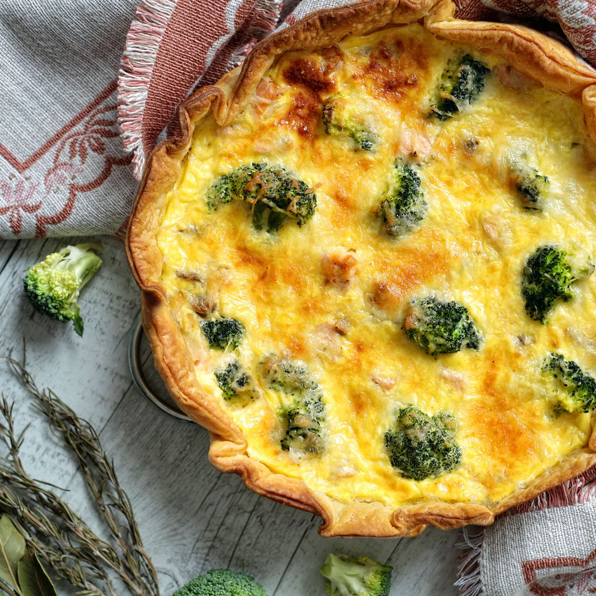

Broccoli quiche

Description
I think quiche are one of the masterpiece of french cuisine, it's so easy to do, yet so gourmet. Side it with a salad and you're good to go.
Once again all measures are in grams, sorry guys ! But I swear, you should give it a go, it will be worth your time.
Ingredients
- 1 puff pastry
- 500g fresh broccoli
- 100g fresh goat cheese
- 100g "crème fraiche"
- 10cl milk
- 3 eggs
Steps
- Preheat the oven at 200°C. Spread the puff pastry in a dish and pre-bake it for 6 minutes.
- Rinse and chop the broccoli in pieces.
- Cook it for 2 minutes in boiling water.
- In a bowl, whisk the eggs with the milk and "crème fraiche". Add some salt and pepper.
- Add the broccoli pieces on the golden pastry.
- Cover the broccoli with the egg mix.
- Add the goat cheese in crumble on top of the quiche.
- Bake it for 20 to 25 minutes. The quiche must be golden and crispy on top.
- Let it cool down for 5 minutes and side it with some greens of your choice ! Bon appétit !